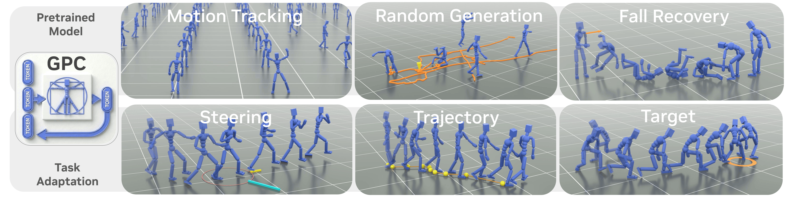

@inproceedings{
shi2026gpc,
title={GPC: Large-Scale Generative Pretraining for Transferable Motor Control},
author={Shi, Yi and Jiang, Yifeng and Tessler, Chen and Peng, Xue Bin},
booktitle={SIGGRAPH '26 Conference Proceedings},
year={2026}
}